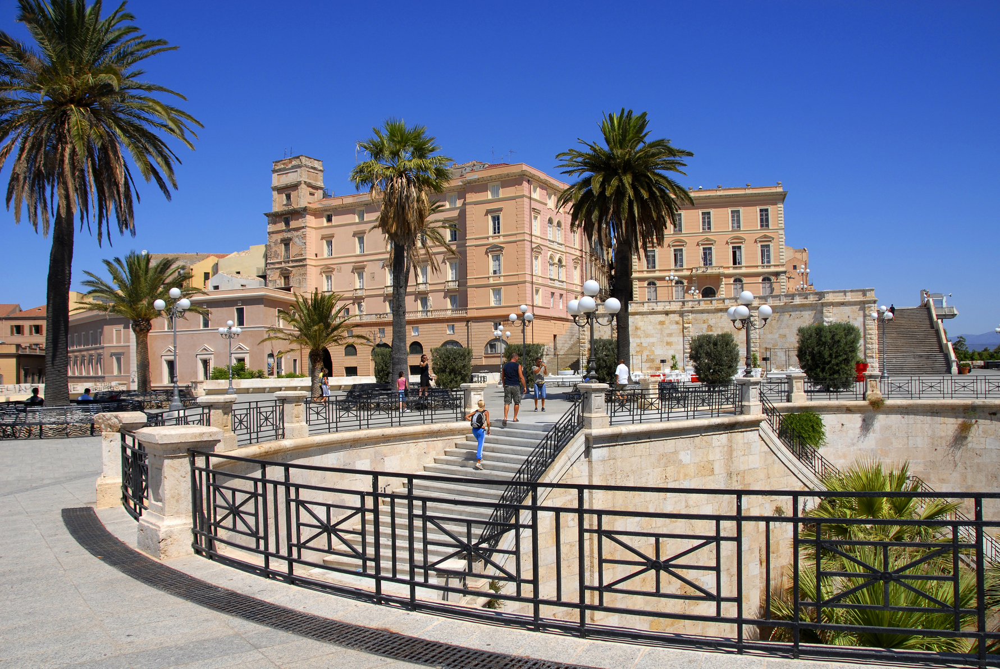
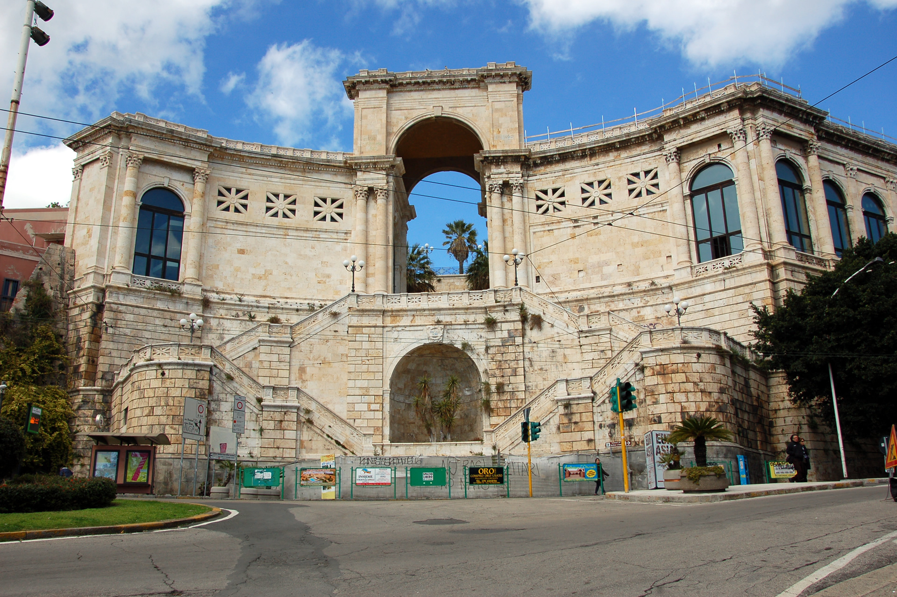

Discover Cagliari
Discover the most beautiful places in Cagliari, from its historic districts and ancient monuments to its beaches and natural landscapes.
Castello


Castello is the main one of the four historic district of the city of Cagliari and it represents its historical heart. Its narrow streets, ancient towers and beautiful buildings tell the story of the city's past. Under every ruling power, from the Pisan through the Aragonese-Spanish and Piedmontese, Castello has been home to the buildings of power and noble residences, to the point that it has become a synonim of the city itself, which in fact is called "Casteddu" in Sardinian. Walking through this district, you can discover the Cathedral of Santa Maria, the medieval towers (such as the Torre dell'Elefante and the Torre di San Pancrazio), and admire the breathtaking views over the Gulf of Angels.
Bastione di Saint Remy



The Bastione of Saint Remy is one of the most iconic landmarks of Cagliari. Located in the historic district of Castello, it connects the upper part of the city with the lower districts. Its impressive monumental staircase and neoclassical architecture make it one of the most recognizable places in the city. At the top, visitors can enjoy the beautiful Terrazza Umberto I, a panoramic terrace offering spectacular views over Cagliari, while inside there's the Passeggiata Coperta, a cultural space reserved for artistic events.